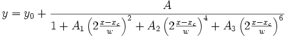
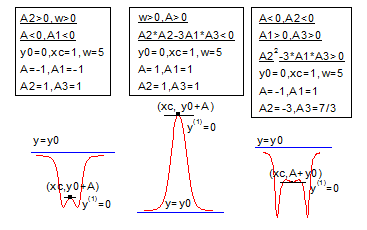

Contents |

Inverse polynomial peak function with center.

Number: 7
Names: y0, xc, w, A, A1, A2, A3
Meanings: y0 = offset, xc = center, w = width, A = amplitude, A1 = coefficient, A2 = coefficient, A3 = coefficient
Lower Bounds: w > 0.0
Upper Bounds: none
nlf_invspoly(x,y0,xc,w,A,A1,A2,A3)
FITFUNC\INVSPOLY.FDF
Spectroscopy, PFW, Peak Functions